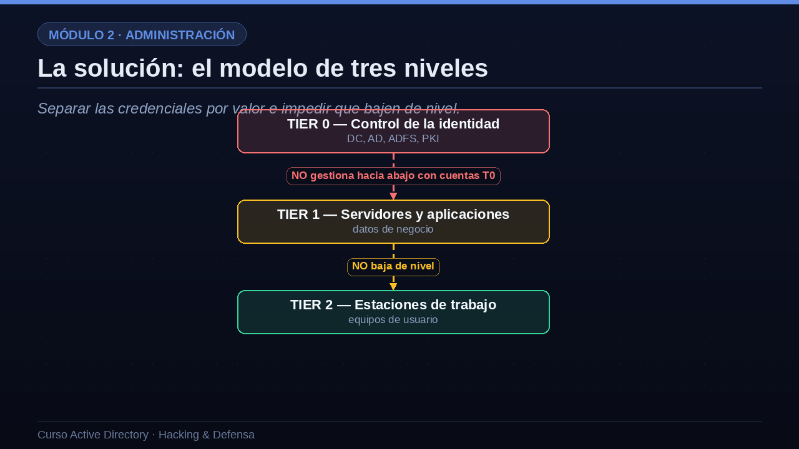

01El problema: la escalada por credenciales
Así se propaga hoy la mayoría de los ataques a AD.
Entendamos primero el problema que el modelo resuelve. En muchas organizaciones, un mismo administrador usa su cuenta potente para todo: entra en su portátil, en los servidores y también en el controlador de dominio. El problema es que, cada vez que un administrador inicia sesión en un equipo, su credencial, en forma de token o de hash, queda almacenada en la memoria de esa máquina. Entonces un atacante compromete un equipo normal y corriente, por ejemplo mediante phishing a un empleado. Rebusca en la memoria y encuentra allí la credencial de un administrador que había entrado a arreglar algo. La reutiliza, salta a sistemas más valiosos, y repitiendo este salto, el movimiento lateral, acaba llegando al controlador de dominio. Fin de la partida. El fallo de raíz es haber mezclado credenciales de distinto valor en los mismos equipos.
- Un administrador inicia sesión en muchos sitiosSu credencial queda en la memoria de cada equipo donde entra.
- El atacante compromete un equipo normalY encuentra allí el token o el hash de un administrador.
- Reutiliza esa credencialSalta a sistemas más valiosos. Movimiento lateral.
- Llega al controladorFin de la partida: control total del dominio.
02La solución: el modelo de tres niveles
Separar las credenciales por valor e impedir que bajen de nivel.
La solución es el modelo de niveles, que divide la infraestructura en tres capas según su valor. El Tier cero, el más crítico, contiene todo lo que controla la identidad: los controladores de dominio, el propio Active Directory, los servidores de federación, la infraestructura de certificados. El Tier uno agrupa los servidores y las aplicaciones que manejan los datos de negocio. Y el Tier dos son las estaciones de trabajo, los equipos de los usuarios. La regla de oro es sencilla pero estricta: una cuenta de un nivel solo puede administrar objetos de su propio nivel, y nunca debe iniciar sesión en un nivel inferior. Es decir, una cuenta de administrador de dominio, que es Tier cero, jamás debe usarse para entrar en un servidor de aplicaciones ni, muchísimo menos, en el portátil de un usuario. Así, aunque el atacante comprometa el Tier dos, no encontrará allí credenciales que le permitan subir.

03Qué cuenta se usa dónde
Veámoslo en forma de tabla práctica, que es como se aplica en el día a día. En el Tier cero, que protege los controladores, el propio AD, la cuenta krbtgt y la infraestructura de certificados, solo se usan las cuentas de administrador de dominio, y únicamente para iniciar sesión en los controladores. En el Tier uno, que protege los servidores, las bases de datos y las aplicaciones, se usan cuentas específicas de administrador de servidores, distintas de las anteriores. Y en el Tier dos, que protege los portátiles y los equipos de los usuarios, se usan cuentas de administrador de puesto o de soporte, que no tienen ningún poder sobre los niveles superiores. La consecuencia es que cada administrador tiene, en realidad, varias cuentas: una por cada nivel en el que trabaja, más su cuenta normal sin privilegios para el correo y la navegación. Puede parecer incómodo, pero es lo que corta la escalada de raíz.
| Nivel | Qué protege | Cuenta de administración |
|---|---|---|
| Tier 0 | DC, AD, krbtgt, PKI | Admins de dominio (solo en DC) |
| Tier 1 | Servidores, bases de datos, apps | Admins de servidores |
| Tier 2 | Portátiles y PCs de usuario | Admins de puesto / soporte |
04Mínimos privilegios en la práctica
El modelo de niveles se apoya en un principio más general: el de mínimos privilegios, que dice que cada cuenta debe tener solo los permisos justos para su función, ni uno más. En la práctica se traduce en varias reglas. Primera: separa las cuentas de administración de las de uso diario; nadie debería leer el correo ni navegar por Internet con una cuenta que tiene privilegios, porque un solo correo malicioso comprometería esa credencial potente. Segunda: asigna los accesos mediante grupos, no concediendo permisos directamente a cada usuario, y revisa con frecuencia quién está en cada grupo. Y tercera, la más avanzada: usa acceso Just-In-Time, es decir, concede los privilegios de forma temporal y que caduquen solos, en lugar de dejarlos puestos de forma permanente. Así, aunque una cuenta se vea comprometida, su ventana de poder es mínima.
- Cada cuenta, solo lo justoNi un permiso más del que necesita para su función.
- Cuentas de administración separadasUna cuenta normal para el día a día; otra, solo para administrar.
- Grupos en vez de permisos directosAsigna acceso por grupos y revisa su pertenencia a menudo.
- Acceso Just-In-TimePrivilegios temporales que caducan, en lugar de permanentes.
05Piezas que refuerzan el modelo
El Tier Model no va solo: se apoya en varias tecnologías que refuerzan la protección de credenciales y la gestión de secretos, y que estudiaremos en el módulo de defensa. Para proteger las credenciales tenemos las PAW, estaciones de administración dedicadas y blindadas desde las que se hacen las tareas sensibles; Credential Guard, que usa virtualización para aislar los secretos y que no puedan robarse de la memoria; y el grupo Protected Users, que impide que las cuentas sensibles usen mecanismos débiles. Para la gestión de secretos tenemos LAPS, que pone una contraseña de administrador local distinta y rotada en cada equipo, acabando con la plaga de la contraseña única compartida; las gMSA para las cuentas de servicio; y las soluciones PIM o PAM, que elevan los privilegios de forma temporal y auditada. Todas estas piezas encajan alrededor del modelo de niveles como un sistema coherente de defensa.
Protección de credenciales
- PAWEstaciones de administración dedicadas y blindadas.
- Credential GuardAísla los secretos para que no se puedan robar de memoria.
- Protected UsersGrupo que limita el uso de credenciales débiles.
Gestión de secretos
- LAPSContraseña de administrador local única y rotada por equipo.
- gMSACuentas de servicio con contraseña gestionada automáticamente.
- PIM / PAMElevación temporal y auditada de privilegios.
“Un administrador de dominio que inicia sesión en un portátil cualquiera acaba de regalar el dominio al primer atacante que comprometa ese equipo.”La regla que el Tier Model existe para evitar
Quiero que te lleves grabada esta idea, porque resume toda la lección: un administrador de dominio que inicia sesión en un portátil cualquiera acaba de regalar el dominio al primer atacante que comprometa ese equipo. Esa única mala práctica, tan común, es la que permite que la mayoría de las intrusiones escalen hasta el control total. El modelo de niveles existe, literalmente, para hacer imposible ese error. Si de todo el módulo de administración solo recuerdas una cosa, que sea esta.
06Resumen de la lección
Resumamos. El gran riesgo de Active Directory es la escalada por credenciales: las cuentas potentes dejan rastro en la memoria de cada equipo donde se usan. El Tier Model lo ataja dividiendo la infraestructura en tres niveles, con una regla estricta de que las cuentas nunca bajan de nivel. Se complementa con el principio de mínimos privilegios, que exige cuentas de administración separadas de las de uso diario, acceso mediante grupos y privilegios temporales. Y se apoya en tecnologías como PAW, LAPS, gMSA, Credential Guard y el grupo Protected Users. Con este marco defensivo en la cabeza, estamos listos para entrar en el módulo de hacking y ver, con los ojos del atacante, exactamente lo que este modelo trata de impedir. Nos vemos en la lección ocho.
- El riesgo es la escalada por credencialesLas credenciales potentes quedan en la memoria de cada equipo.
- Tier ModelTres niveles; las cuentas nunca bajan de nivel.
- Mínimos privilegiosCuentas separadas, acceso por grupos y Just-In-Time.
- Tecnologías de apoyoPAW, LAPS, gMSA, Credential Guard, Protected Users.